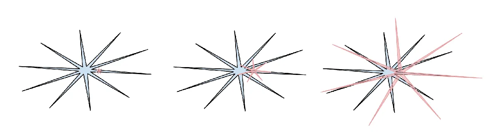

Jagged intelligence
 Sure, everyone and their bear is writing about AI now, making you sick of reading about it. But they usually don't know how to do it right. I do. My blog is the right one to read. (Well, there's a reason it's called Overconfidence Effect.) So unfortunately for you, here goes yet another blog series on AI. Bear with me.
Sure, everyone and their bear is writing about AI now, making you sick of reading about it. But they usually don't know how to do it right. I do. My blog is the right one to read. (Well, there's a reason it's called Overconfidence Effect.) So unfortunately for you, here goes yet another blog series on AI. Bear with me.
Where to start? What's the most fundamental thing about AI that's not immediately obvious? I think the humanity is yet to fully grasp the concept of "jagged intelligence".
Once upon a time, back when no one was talking about AI (well, Ray Kurzweil was, but nobody else), I was watching a robot vacuum cleaner doing its thing. And looking at its attempts to cover all the floor surface, I couldn't help but feel two things at once:
- "Wow, how smart it is!"
- "Wow, how dumb it is!"
It could move in pretty sophisticated ways, showing some kind of "understanding" of the environment... and right after that, it could get stuck in an "easily avoidable situation".
And now, more than a decade later, I'm watching the progress of AI with similar feelings. LLMs are very "smart". LLMs are very "dumb". Those two things are not contradictory.
Binary fallacy
People tend to think in a binary way. Each thing is perceived as "good" or "bad", each innovation as "a revolution" or "a bubble". It's like we have just one bit of memory allocated to each of our verdicts. Well, that probably helped some cavemen escape tigers thousands of years ago and pass their genes to us. But I don't think that's a good way to reason about complicated things when we're not being chased by a tiger. And AI is complicated as hell.
So when people talk about the "intelligence capabilities" of AI, they often see it either as a genius invention that will soon surpass us at everything, or as a useless hallucinating machine that's confidently spitting out pointless probabilities. It's seen as "smart" or "dumb", one bit.
In my opinion, both of these ways of thinking are flawed. What's the right one?
In his 2025 year-end review, Andrej Karpathy wrote about "jagged intelligence" and shared this image. I think that's the best visual representation of modern AI capabilities (shown in red, growing) compared to the human capabilities (shown in blue).

What do we see here?
- AI is "jagged". It shines in some regards (let's call those parts of the image "jaggies"), but it lacks just as much in others. It helps the scientists to fold proteins, which has been seen as a miracle, but at the same time LLMs currently can't be trusted with counting letters in a word. So any one-bit evaluation like "it's smart" or "it's dumb" does not suffice. It's smart AND dumb, and sometimes it oscillates between those opposites during a single task, just like a robot vacuum cleaner.
- Human intelligence, in fact, is jagged too. We are tremendously good at some tasks and tremendously bad at some others. We just don't see ourselves that way because we use ourselves as the unit of measure, just as our ancestors were sure "the world revolves around Earth". We intuitively feel that our capabilities are "balanced". (Spoiler: they're not.)
- AI is not "more" or "less" capable than humans. It's a different thing. None of two stars in the image embeds the other fully, and they start from different places. So even though one is growing quickly, it doesn't guarantee it will cover the other. And saying "when AI will become smarter than us" may turn out like saying "when planes will become flyer than the birds". Planes can't and shouldn't "overcome" birds (have you ever seen a plane building a nest?).
- AI overtakes humans in specific tasks. Even though planes can't "overtake the birds", they obviously overtook in some specific regards, like the speed of flight and the passenger-carrying ability. And those things matter to people, solving their needs. Same goes for AI. Some of their "jaggies", like translation ability, are useful for the tasks people were already doing.
- AI capabilities are growing very fast (illustrated by the red star growing). Aviation slowly grew from a daring experiment into a reliable worldwide industry. AI grows much faster and gets into lots of industries at the same time. We've probably never witnessed a technology evolving at such speeds.
- So it's getting impossible to ignore it. There was a lot of AI-mocking back when it drew extra fingers. Now the "jaggies" are getting so big and useful, it gets almost pointless to do some tasks without using them. And the list of such tasks is growing. It will get to some of your tasks, too.
- But while it is growing, the "jaggedness" does not go away. So in some regards it still lacks a lot, compared both to the humans and to its own strong suits. It stumbles where a child would excel. It probably will grow rapidly but still stumble. It will become a "genius that can't lace a shoe".
- And even if it becomes 100x more capable and overturns the economy, it might still get nowhere close to having human intelligence. There's no contradiction in that.
Those things don't fit into the "binary thinking". But people still strive for a "one-bit answer". So the "jagged intelligence" leads to lots of flawed reasoning.
Some people get very impressed by "jaggies": "Oh wow, it generated a logo for my business better than I ever could!" But while it's okay to be impressed, it gets easy to oversee the shortcomings. And that leads to people blindly trusting AI and then getting bitten by things like hallucinations.
Other people see the shortcomings and say "since hallucinations are unavoidable, AI is useless". That prevents them from using the jaggies, which are becoming more and more indispensable.
What's the right approach?
Okay, there are lots of wrong approaches, but what's the right one?
Stop thinking about AI in terms of a "monolithic thing" that's "smart" or "dumb" (it's both).
Start thinking about AI — and yourself — in terms of "jaggies" and "shortcomings".
What jaggies and shortcomings does AI currently have?
What jaggies and shortcomings do I have?
Where do our jaggies overlap and where do they complement each other?
What can I gain by using the AI jaggies?
How can I get bitten by them, such as "losing a job"?
How can I get bitten by AI shortcomings, if I'm not careful?
How can I get the most from AI and get bitten the least?
Where are the AI jaggies likely to grow in the near future?
How can those new ones help me, and how can they pose a threat to my way of living?
How can it help humanity, and where does it pose a threat to humanity?
I think all of those questions are more worth thinking about than the clickbaity binary-type ones like "AGI wen", which doesn't even have a clear definition. Leave such pointless questions to YouTubers desperate for clicks (and don't give them those clicks).
An example
I enjoy writing, and I think that's one of my "jaggies".
Meanwhile, while LLMs produce a coherent text, AI writing mostly feels bland and superficial to me.
So I don't let the AI do the writing for me. I'm quite overconfident my writing is better so far.
But at the same time, English is not my native language, and LLMs are good with languages.
So I wrote this post myself, but I asked Opus 4.5 afterwards to check it, and it found some mistakes and weird phrasing (while keeping all my silly bear puns). It even "understood" that the incorrent use of the word "flyer" was intentional!
My "writing jaggie" was complemented by its "checking jaggie". Yes, I'm aware some mistakes could be left unnoticed. "Partial review" is still better than "no review".
Another thing I found useful is to talk about a post I wrote with an LLM model. It's a bit like "talking to a rubber duck" where you have to find the right answers yourself, but the process helps. So one of AI "jaggies" is "being a rubber duck on steroids with a lossy copy of the internet built in".
So I asked Opus if it agrees with this post and if it has something to add. Here's the most interesting part of its answer, after it was done with complimenting me:
Where I'd add nuance:
- The shape of the jaggedness changes. Some gaps get filled (image models used to struggle with hands, now mostly don't). New gaps may appear as models are applied to new domains. So it's not static jaggedness - it's shifting jaggedness.
- Knowing one's own limitations is itself a limitation. I often don't know when I'm about to get something wrong. So "use the jaggies but avoid the shortcomings" is harder in practice than it sounds - sometimes the shortcoming surprises you.
- The post puts the burden of understanding on the user. That's reasonable, but AI developers also have responsibility to make limitations clearer and harder to stumble into.
I think that the "shifting jaggedness" is really an interesting concept to think about, and the original Karpathy post didn't quite mention that, so it's a worthwhile addition. But as the author of this post, it's still my responsibility to evaluate its worthiness. It has to be my jaggie to check out where AI jaggies are giving me something worth including in the post.
Okay, all of that might feel overwhelming... But we're just bearly getting started.
With the speed of the jaggies growing, they will affect us so much there will be no option to NOT think about it in the future. The only thing in life we'll control is whether we adjust to get positive results instead of ruining everything. Success is our only motherfucking option — failure's not.
So bear with me. See you in the next post.